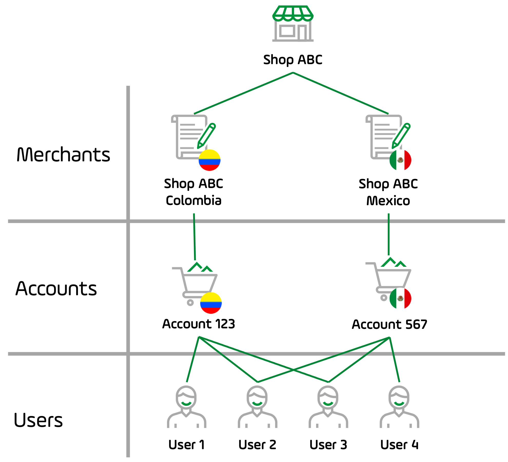
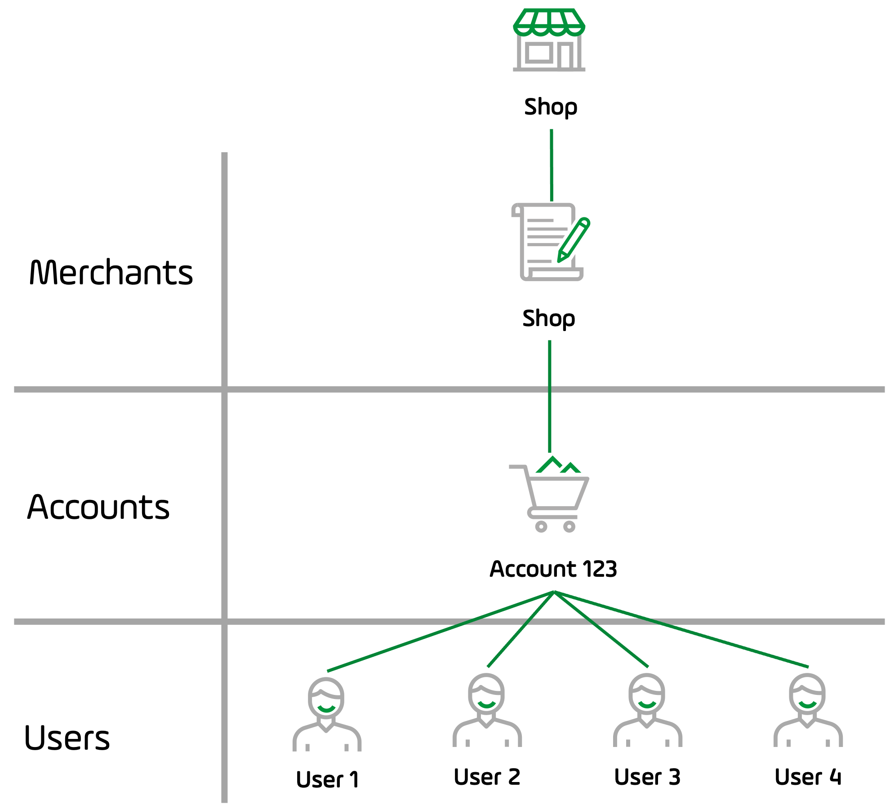

PayU Module guide
We make it easy for merchants to offer online payments while taking away the burden of integrating with multiple payment methods.
The PayU module is the system where you can securely manage your account. In this module, you can change your password, get sales reports, find the data needed to integrate your website with our platform, use tools to receive payments, and transfer money to your bank account.
PayU module is ideal for businesses that need to:
- Keep control of their stocks and sales performed through PayU.
- Be updated with the information of the financial movements of their account.
- Make requests to the support team about issues in their account.
To access the PayU module, go to www.payu.com, at the top right corner, you find the option to log in. For merchants in Colombia, this option is called PayU Login.
Alternatively, you can go directly to https://merchants.payulatam.com/.

Note
You don’t have a user yet? Learn how to create one
here.
What you can do using the PayU Module
PayU module allows you to perform the following operations:
- See the available funds in your PayU account and transfer them to your bank account.
- Consult the movements of your accounts, statements, and reports.
- View the status of your sales
- Find the authentication credentials to integrate with your sales platform: API Key, API Login, and merchant ID.
- Update your bank details.
- Configure your company’s logo to appear on the web checkout (payment gateway).
- Set the URLs of your confirmation page and answer page (if you have an API integration or web checkout).
PayU module concepts
The PayU Module allows a user to manage the merchant and its related accounts. The complexity of your PayU module depends on your size. Let’s explain this using the following concepts.
- Merchant: the merchant is the store that offers products or services. PayU defines the merchant as the legal person who hires the PayU service. If your store is legally constituted in two countries (two legal entities), each legal entity must be created as a merchant.
For example, Shop ABC has branches in Mexico and Colombia, but the shop has constituted one company in each country, when Shop ABC hires the PayU services, PayU creates two different merchants.
- Account: an account in PayU represents a processing country, a business line, or a hired PayU feature of a given merchant. If your shop is legally constituted in a country and sells products in many countries, you have a single merchant (your shop) in which you find an account per each country.
For example, XYZ systems is a company legally constituted in the United States who offers the services of web hosting in Colombia, Mexico, and Peru. When XYZ systems hires the PayU services, PayU creates a merchant with three accounts.
Moreover, an account is also one of the following:
- A business line: when a merchant has many different business lines in a given country. For example, a software company can offer their product as one business line and the training as another. In this case, this commerce has two accounts.
- A feature: if you hire two PayU features with a different pricing schema, each feature is represented in your PayU module as an account. For example, a shop has one price to process with credit cards and one different when they process with cash payments.
- User: a user is a person who has a profile to manage or consult the information of an account.
A profile is a set of permissions to access an account. A user can have one or multiple profiles, this means that a user can access multiple accounts and multiple merchants.
The following graphics show the relation between the concepts above.
Multi merchant shop
The shop Shop ABC has branches in Mexico and Colombia, both are legally constituted as Shop ABC Mexico and Shop ABC Colombia, this is the relation between the previous concepts for this example:

-
The PayU module for Shop ABC has two merchants: Shop ABC Mexico and Shop ABC Colombia, each merchant has an account as they process only in the country where they are constituted.
-
Shop ABC has four users; User 2 and User 3 can access both accounts, meanwhile User 1 can only access the Colombian account and User 4 to the Mexican account.
Note
In this case, each merchant may have multiple accounts, if required.
Single merchant shop with multiple accounts
XYZ systems is a company legally constituted in the United States who offers the services of web hosting in Colombia, Mexico, and Peru; in addition, XYZ systems has two business lines in Colombia: web hosting and training. This is the relation between the previous concepts for this example:

-
The PayU module for XYZ systems has a single merchant as they are legally constituted in the United States. As XYZ systems processes in three countries, this merchant has four accounts; two for Colombia (one per each business line), one for Mexico and one for Peru.
-
Shop ABC has four users; User 3 can access all the accounts, meanwhile, the other users can access their assigned country.
Note
Merchants can be outside of our processing countries. Nevertheless, they must have an intermediary bank account in each country they want to process.
Single merchants with single accounts
This is the most common case when using the PayU module. A shop is legally constituted in a country where it offers its products or services, this is the relation between the previous concepts for this example:

- The PayU module for this shop has a single account and a single merchant, where all its users can access according to the profile they have.
Topics in this Section
Learn how to log in your account, recover your password and update your user data.
Learn how to manage users, profiles and permissions to access the accounts in your merchants.
Learn how to sell using PayU, transfer funds, refund transactions, and manage disputes.
Learn how to consult your statements, transfers, sales, and further information your shop may require to meet regulations.
Last modified
October 19, 2021:
Fixes found during the translations (855dca44)